Laser Machine Report
Laser Machine
レーザー光を切削や切断加工に利用することで、従来の刃物や切削器具を用いても不可能な機械加工を行う目的で開発された工作機械である。(Wikipedia参照)
授業内容
イラストレーターを使い、加工するためのデータをつくる。レーザー加工機を使って、アクリル版から絵を切り取る。
「SPIRIT」
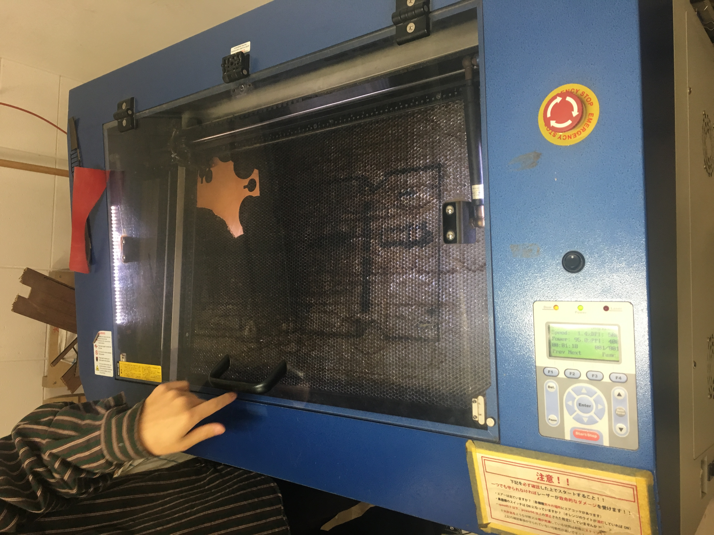
Illustrator,データ作成
レーザー加工機の利用にあたり、2次元のベクターデータを用意する必要がある。ファイル形式は[.esp]
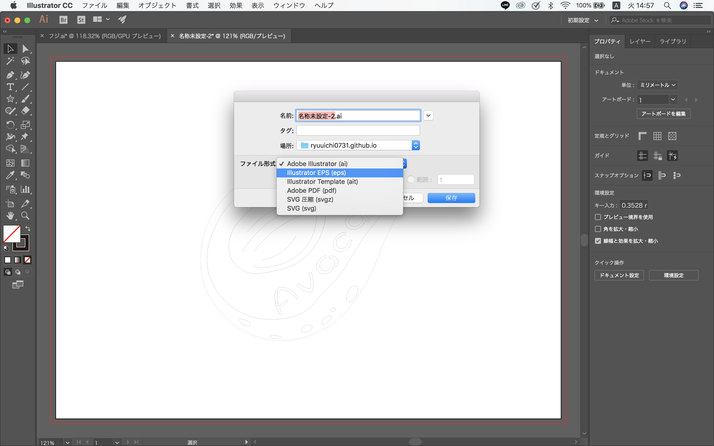
データを描く際、ファイルからドキュメントから、カラーモードをRGBにする（CMYKから変更する）

カットする対象の線と、彫刻する線の色とを分けて描く（黒→彫刻・赤→切断）
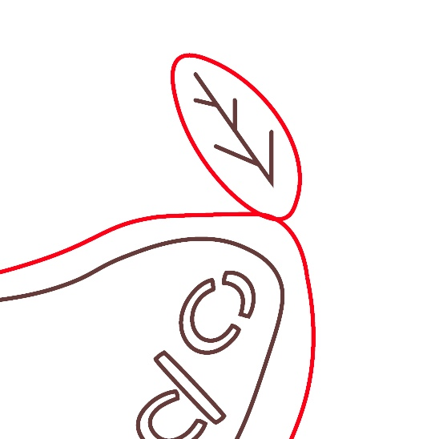
対象の線幅が「0.001」に設定されているか確認する。
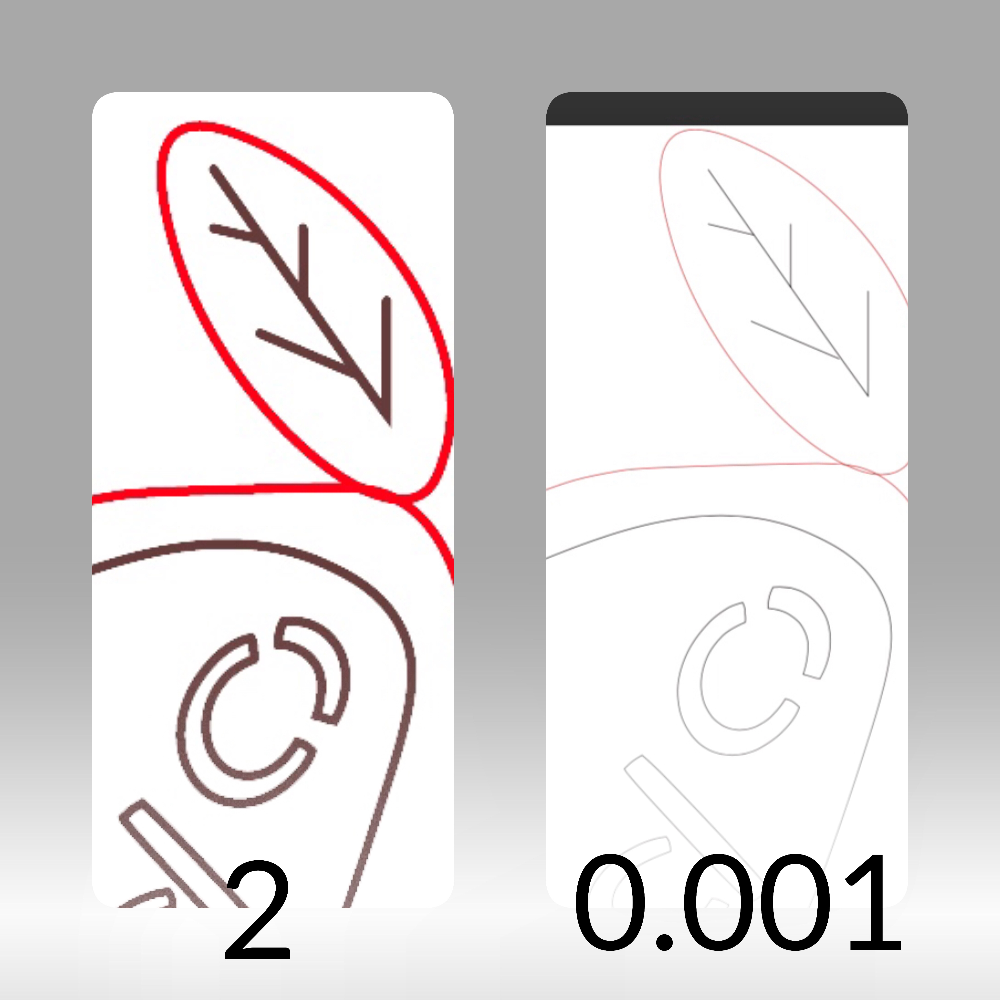
アウトラインを作成
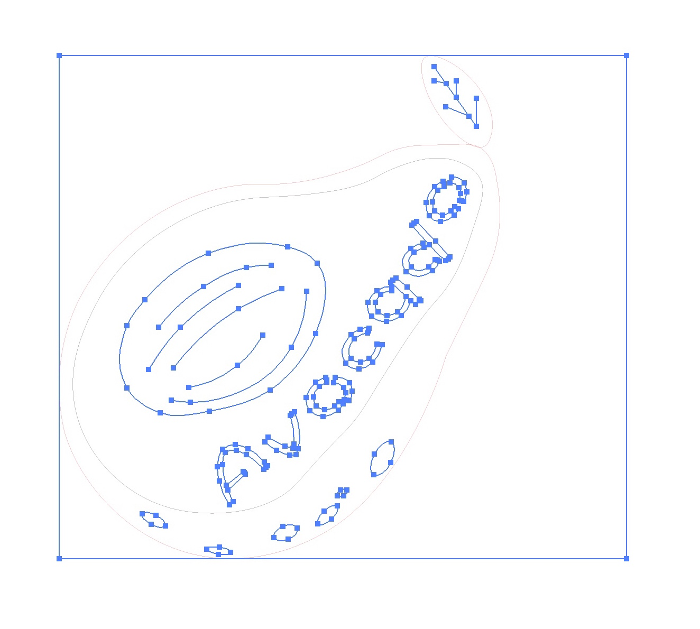
CPU表示に切り替える
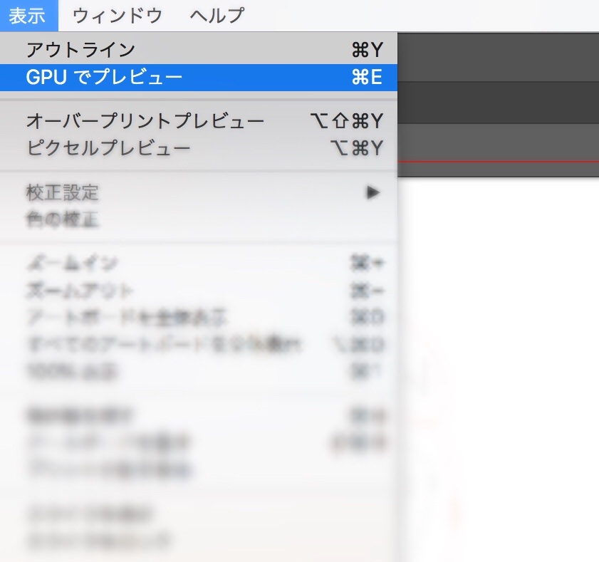
作成したデータ

ファイル形式はそのままに、USBに移動させておく！
(USBを通してレーザー加工機にデータを移す。)
レーザー加工機の使用（ウルトラファクトリー１F）
使用前の確認事項
・加工台の水平確認・加工の障害となるようなゴミがついていないか確認
・集塵機とエアーは稼働しているか
・素材は加工禁止品でないかどうか
電源を入れてから加工スタートまで「レーザー加工機」
・電源を入れる・集塵機の電源を入れる
・ホースシャッターを開ける（レーザー加工の際に材料から出た塵をバキューム）
・エアーのコックを開け、エアー（空気）が出ているか確認
・素材をセットし（今回はアクリル）焦点距離を設定する。
（焦点設定後、使用したマニュアルピンは所定の位置へ戻す。）
・閉じる
電源を入れてから加工スタートまで「データ・PC操作」
・PCを立ち上げる・「CorelDRAW」を立ち上げる。
・騎手に合わせたアートボートのサイズを指定する（サイズが違うと別の位置からスタートしてしまう）
・USBからデータをインポートする
・データをカットおよび彫刻に応じた設定にする
（カットの場合：ペンの幅を極細線、塗りつぶしなし）
（彫刻の場合：塗りつぶし）
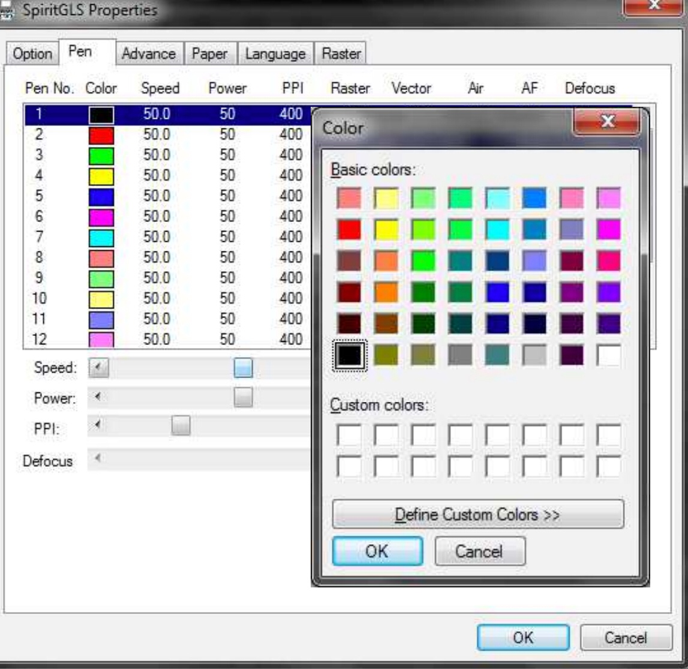
色の詳細な設定
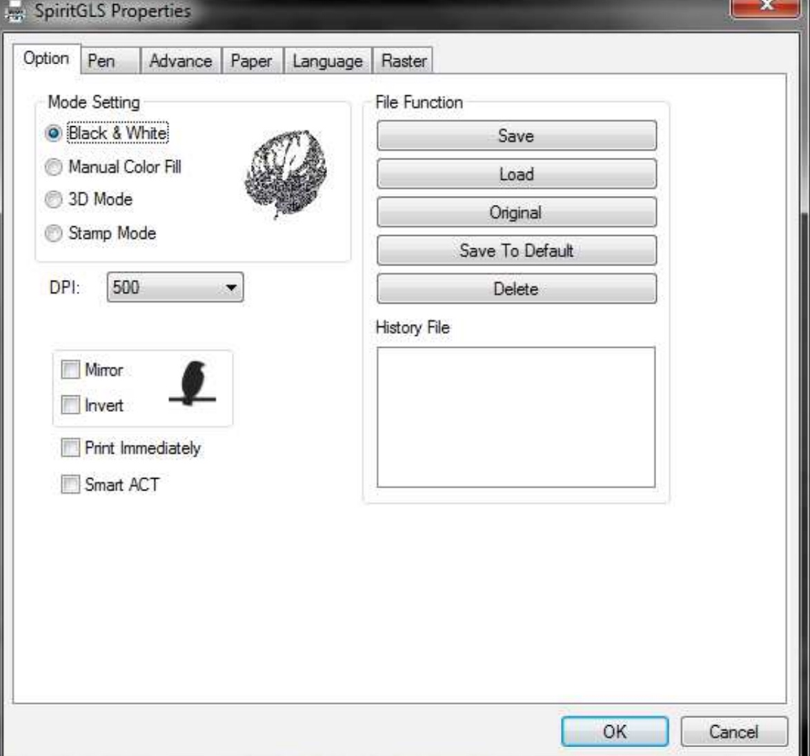
モードの設定
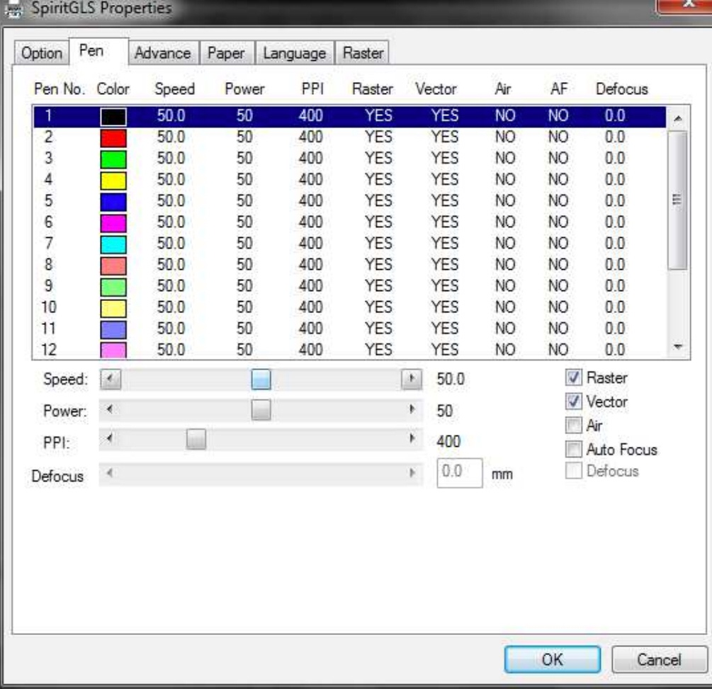
スピード&パワーの設定
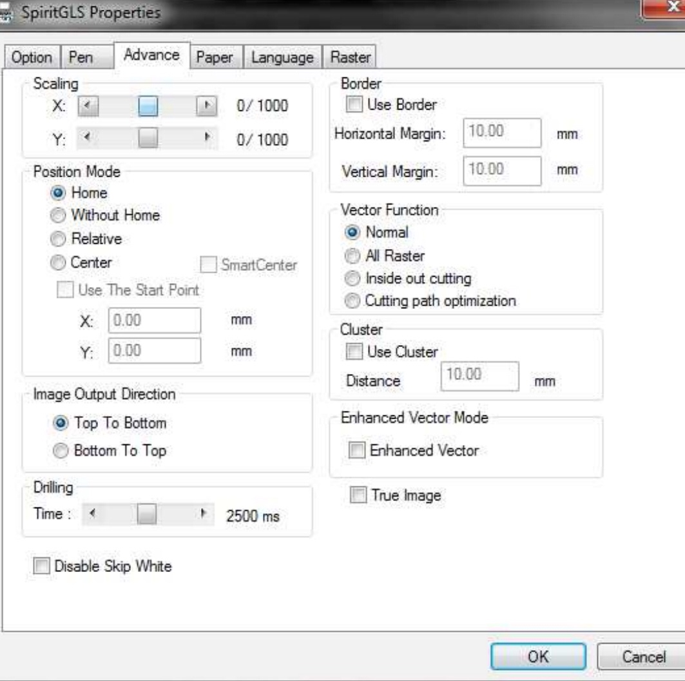
ポジションを設定
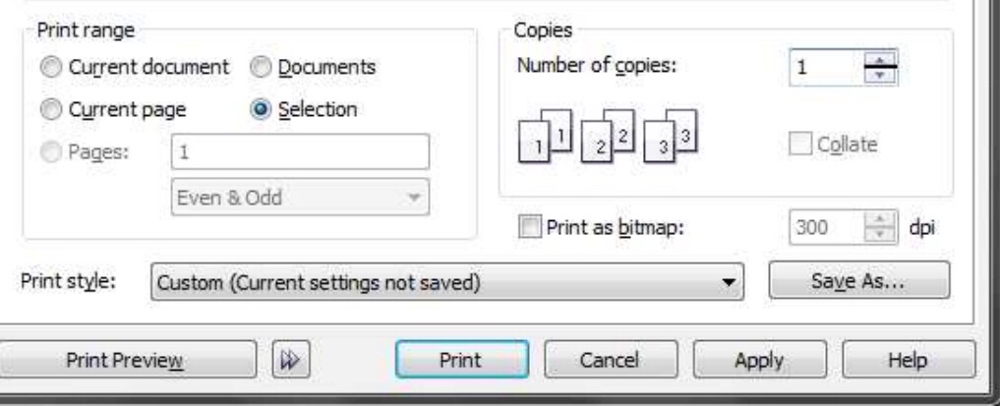
OKをクリック
・印刷をクリックし、レーザー本体へ転移
・加工中は絶対に機器のそばを離れない。
完成品
（モチーフ：アボカド）
反省点
アボカドをモチーフにしたが、「果実」と「葉」が切断の過程で別れてしまった。その理由はアボカドの果実と葉を分けて描いてしまったことにあると思う。
それぞれに輪郭を切断を指定する「赤色」で描いてしまったので、「果実」と「葉」の二つが切断対象として切り取られてしまったのである。
二つの輪郭を一緒にして描くべきだった。
また、接する面積をもっと大きく描いていれば別れることもなかっただろう。
まとめ
今回の授業で初めてレーザー加工機を使うことができた。
3Dプリンターのときと同様に使う機器に応じて、作業に最適化されたソフトがあるのだと学んだ。
その他、ファイル形式やカラーの設定など、他と何が違うのかまではわからないが、使い分けていく必要がある。
作るのはデータだけで、そのあとは機会がやってくれる。
アイデアさえあれば、あとはそれをデータに書き起こして、あとは機会まかせでの制作である。
このような制作はデジタルファブリケーションにとって、象徴的な作業工程だと思う。
このような機器が普及によって、頭の中にあるアイデアをカタチにできる機会が増えていくことは素晴らしいことなのだと感じた。